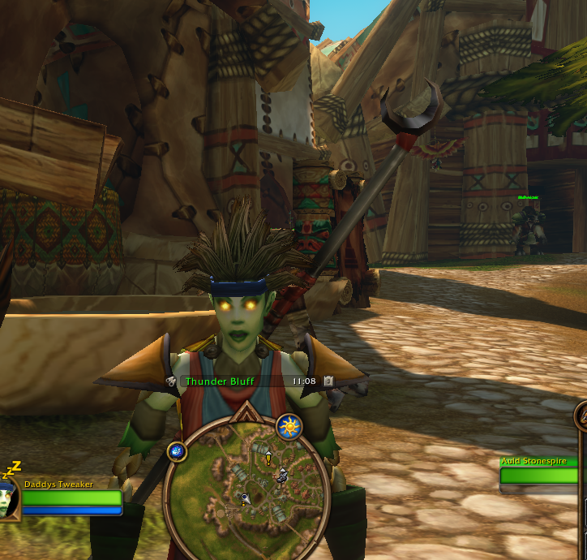

FROM SEKILOV
Level 30.
All yours.
DIRTYBROWN · DADDY’S TWEAKER · UNDEAD PRIEST · HORDE
Daddy’s Tweaker made it to 30. Here’s the damage-first Priest setup I’d run, with the gear and dungeon targets to match. I’ve included two other builds in case you want to try a different style.
See the build I’d start with
FOR DIRTYBROWN · FROM SEKILOV
Your damage build
Two other ways to play it.
Each build uses 21 points. The gear below is for Shadow, so check the tradeoffs before switching.
Gear to work toward
These are targets for the level-30 setup, not a scan of what’s in your bags. Each piece has a reason; click any icon to see its game tooltip.
THREE DUNGEONS · TEN GEAR LEADS
Open the personal dungeon atlas ↓Dungeons and gear
Choose a dungeon to see its map, route, gear targets, and searchable NPC notes. Classic references and current beta findings are labeled separately.